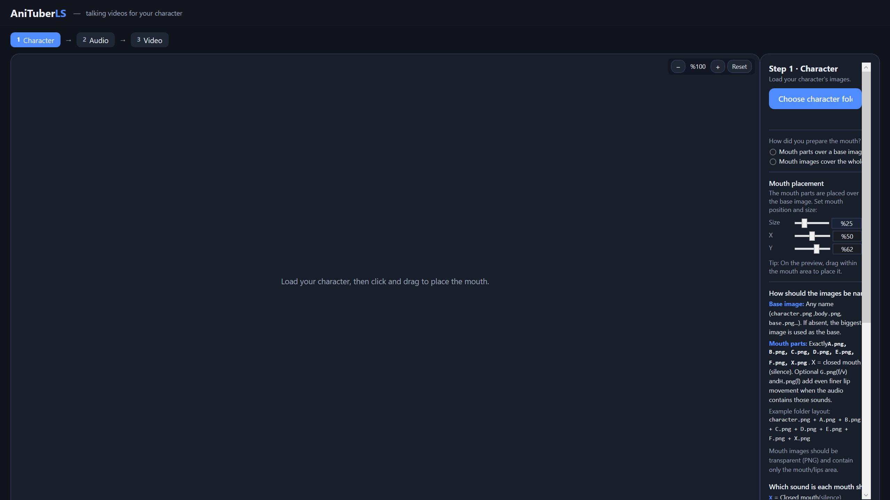
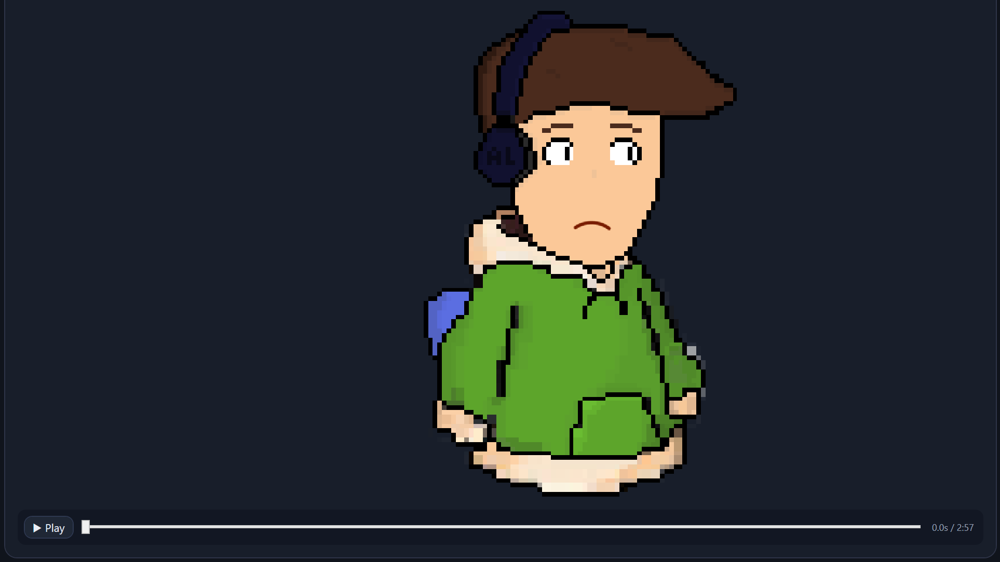
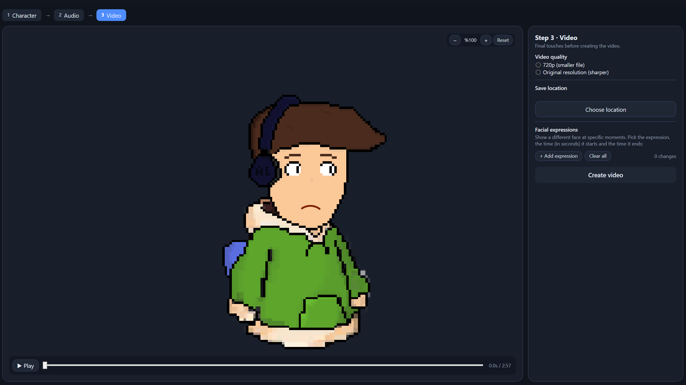

Automatic Lip Sync
Analyze voice recordings and automatically place appropriate mouth shapes on the timeline.
AniStudioLS is an AI-assisted desktop application that analyzes voice recordings and automatically creates lip sync animations for 2D characters.
● Currently in beta

AniStudioLS is designed to automate the tedious parts of creating talking 2D characters.
Analyze voice recordings and automatically place appropriate mouth shapes on the timeline.
Use your own character artwork and mouth shapes to create personalized animations.
Detect speech sections and reduce unnecessary mouth movement during silence and non-speech audio.
Build a foundation for adding facial expressions and different animation states to your timeline.
Process long audio recordings in manageable chunks for more reliable animation and video generation.
Export your finished animation as a video at your chosen resolution.
A few screenshots from the current application interface.


AniStudioLS is being developed with the assistance of AI-powered software development tools. The website itself was also created with the help of AI development tools.
Try the application and help improve it with your feedback.
Download Beta Windows · Beta · Free